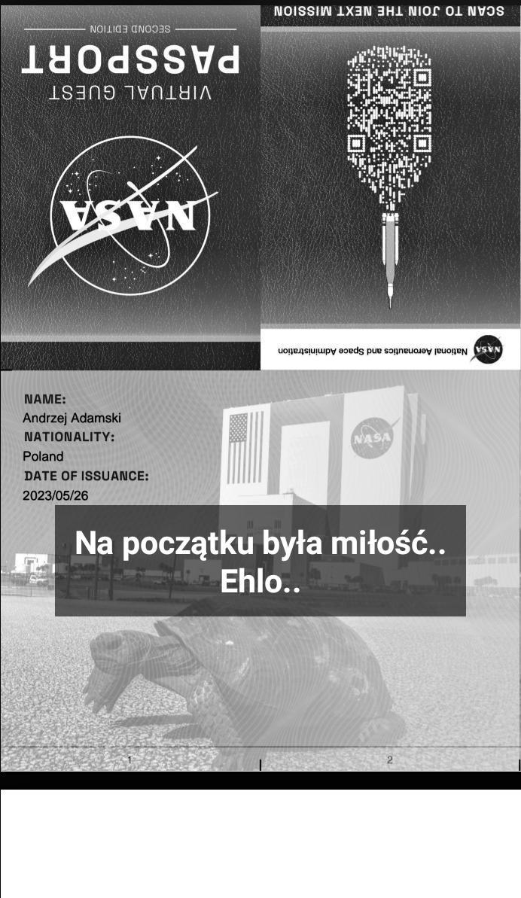

Tuż obok rosło drzewo w którego konarach skryłem się ja.
To byłem ja, mały wręcz nie wielki, zielony liść okiełznany światłem Słońca aby dostarczać energii memu chlebodawcy - drzewu.
Lecz przyszła jesień. Pożółkłem i poczerwieniałem. Spadłem.
Zawiał wiatr, który poniósł mnie hen daleko od drzewa. Tam upadłem, zmokłem i zgniłem.
Na początku była kawa.
Sięgnąłem po filiżankę i zasiorpnąłem łyk gorącego napoju. Przeszedł mnie przyjemny dreszcz.
Choć nie było nikogo z kim mógłbym dzielić smak kawy, upuściłem filiżankę. Nie potłukła się a na dywanie rozpanoszyła się czarno-beżowa, mokra plama.
"Przecudowna" - pomyślałem. Ustawiłem aparat na statywie i załączyłem interwał zdjęciowy co 1 minutę. Tak uwieczniłem proces stygnięcia plamy aż do jej wyschnięcia.